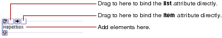
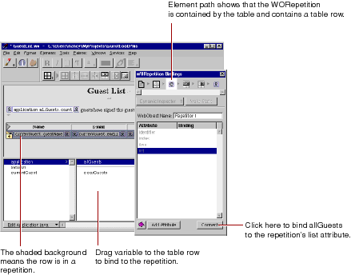

Table of Contents
Table of Contents  Next Section
Table of Contents
Next Section
Table of Contents  Previous Section
Previous Section
To create a repetition:
The repetition appears in the component window.

A repetition can contain any other elements, either static HTML or dynamic WebObjects elements.
When you drag an item from the object browser to the WORepetition to bind it, the default attribute shown in the Inspector depends on whether the item is an array. If it is, list is the default attribute; otherwise, item is the default attribute.
In addition, as with WOStrings, WebObjects Builder provides a shortcut for binding repetitions so that you don't have to use the Inspector. Drag to the first binding box to bind the list attribute; drag to the second box to bind the item attribute.
When you wrap a repetition around a table row, the repetition symbol doesn't appear. Instead, a shaded background appears behind the row. To bind the repetition, drag from the object browser to anywhere in the row (but not to a dynamic element inside the row). The Inspector appears, allowing you to complete the binding as usual.

Note: You can also wrap a repetition around a single cell in a table. In addition, this same procedure of wrapping a repetition around a table row or cell also works for conditionals (see next section).
Table of Contents Next Section